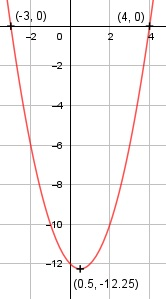

Aufgabe 2 f(x) = x2 - x - 12 f'(x) = 2x - 1, f''(x) = 2, f'''(x) = 0 Definitionsbereich: -∞ < x < ∞ Wertebereich: - 12,25 ≤ f(x) < ∞ (siehe Extrempunkte) Asymptoten: - Symmetrie: - Nullstellen: x2 - x - 12 = 0 p, q - Formel p = -1, q = - 12 x1,2 = x1,2 = 0,5 ± x1,2 = 0,5 ± x1,2 = 0,5 ± 3,5 xx1 = 4 xx2 = - 3 N1(4|0), N2(-3|0) Schnittpunkt mit der y-Achse: fx(0) = 02 - 0 - 12 = -12 Sy (0|- 12) Extrempunkte: 2x - 1 = 0 | +1 2x = 1 | :2 x = 0,5, f/b> f''(x) = 2 > 0 --> Tiefpunkt bei (0,5|-12,25) Alternativ: Scheitelpunktberechnung f(x) = (x - 0,5)2 - 0,25 - 12 f(x) = (x - 0,5)2 - 12,25 S(0,5|-12,25) Wendepunkte: 2 = 0 --> Widerspruch, keine Wendepunkte Graph:
